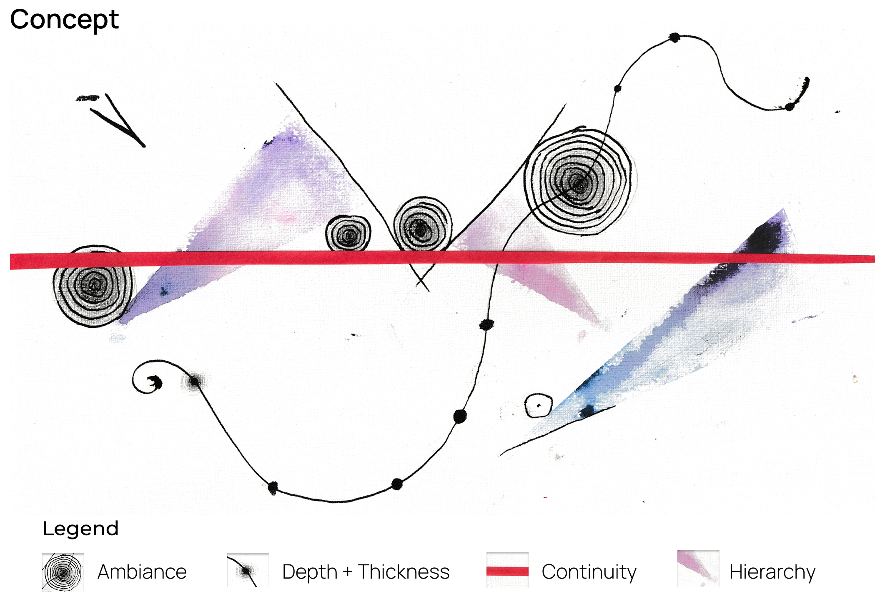
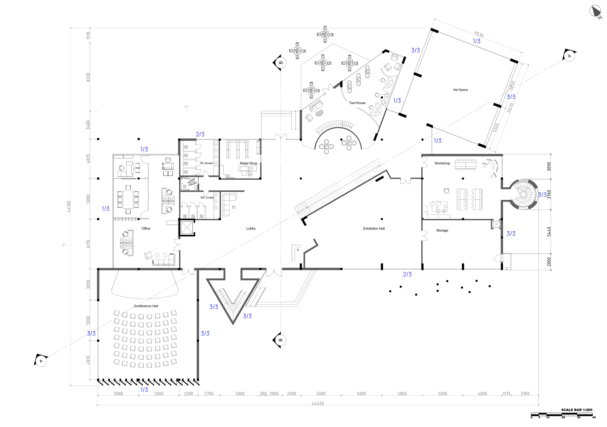
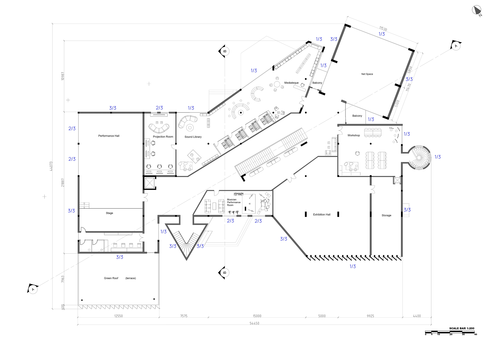
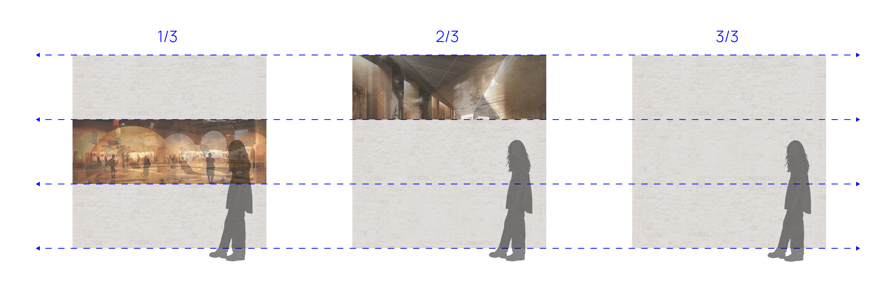
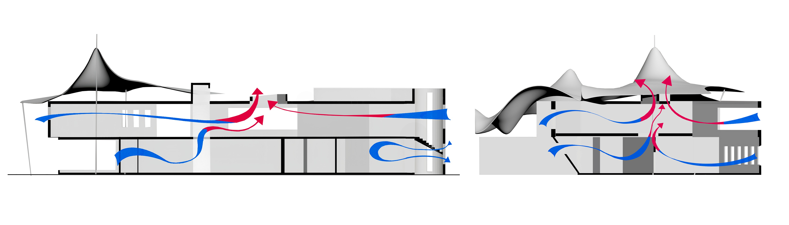
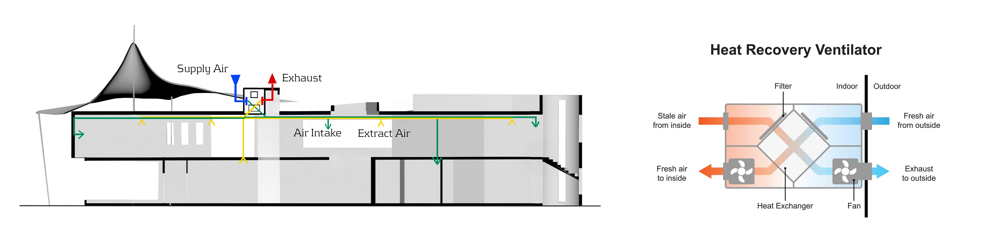
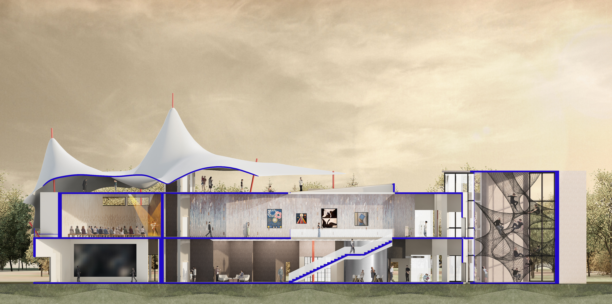
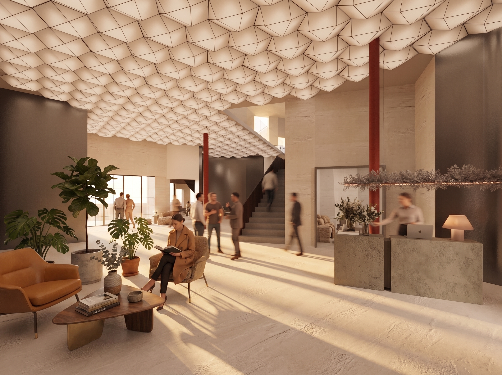
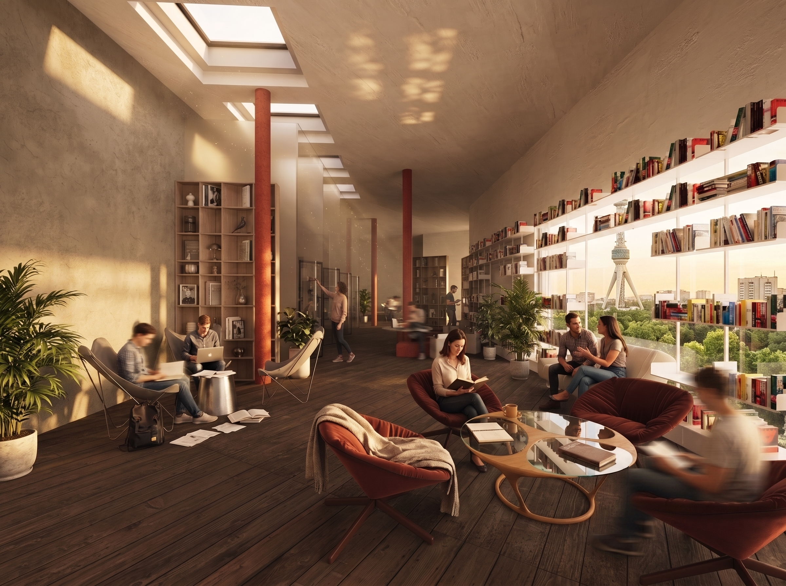
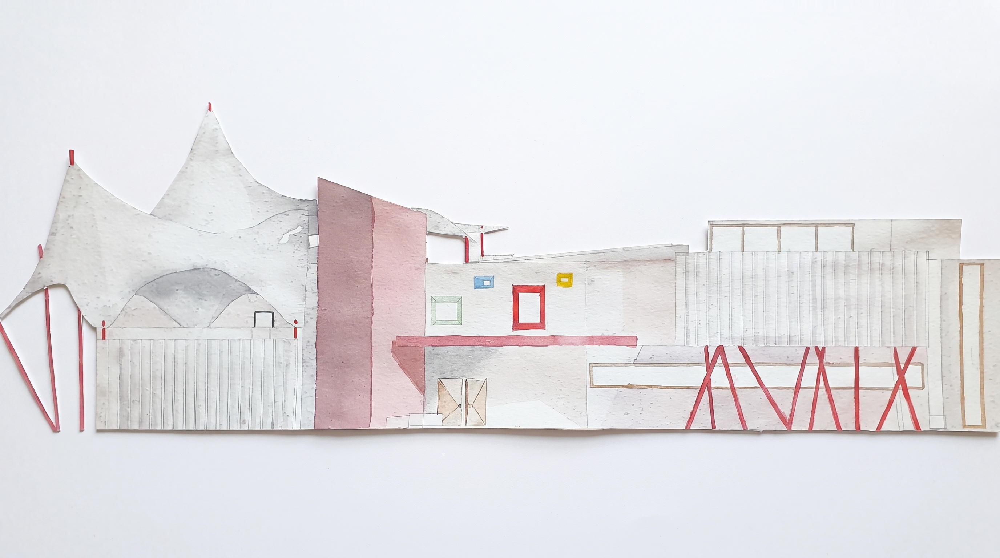

Ambiance: Creating an immersive atmosphere through architecture.


Back facade
The ground floor is organized around a clear circulation strategy. From the entrance, visitors are visually connected to the main lobby, exhibition spaces, staircase, and private garden, allowing immediate orientation within the building. Public programs—including the exhibition hall, workshops, conference hall, and retail area—are arranged around this central sequence, while administrative functions remain more private. The double-height Net Space (Crazy Activity) becomes the project's primary experiential element, connecting the first and second floors through a suspended mesh structure filled with natural light.

Back facade
The second floor accommodates the building's most


Back facade

Back facade

Net Space
The Net Space is the project's primary experiential element.

Air Circulation within Building

Geothermal Water Heat Exchanger System

Heat Recovery Ventilation (HRV) System


Section A-A



Lobby Perspective

Mediatheque Perspective
